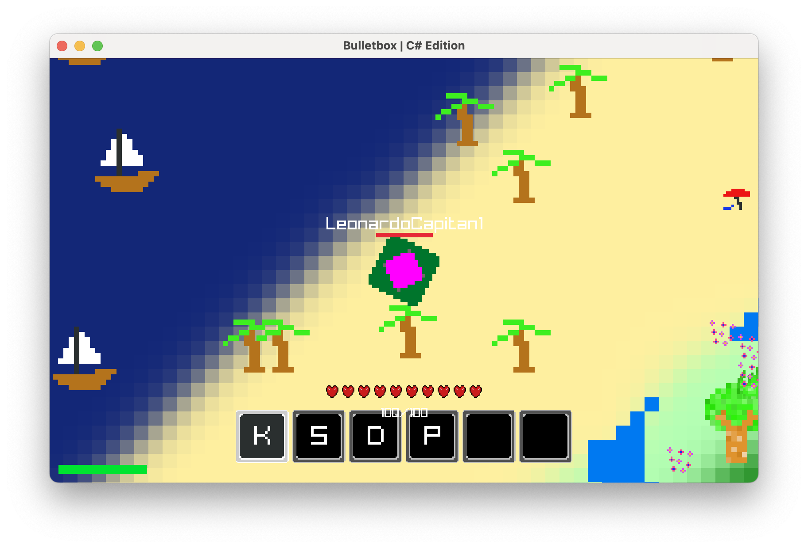
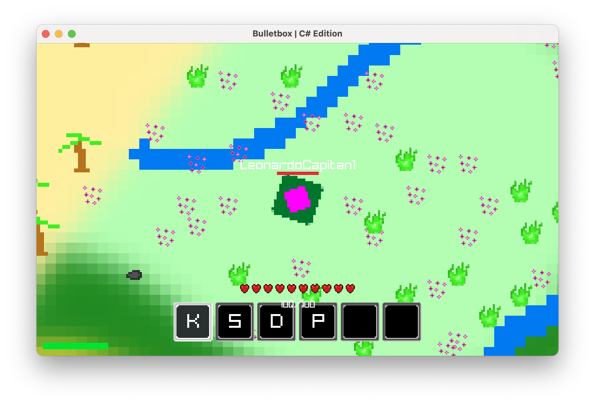
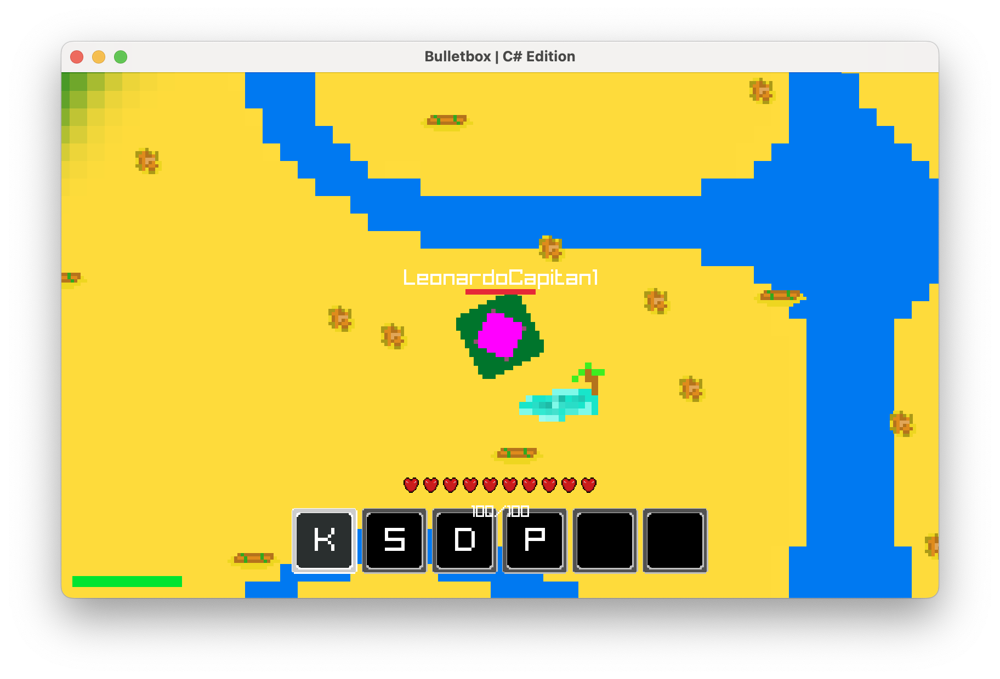
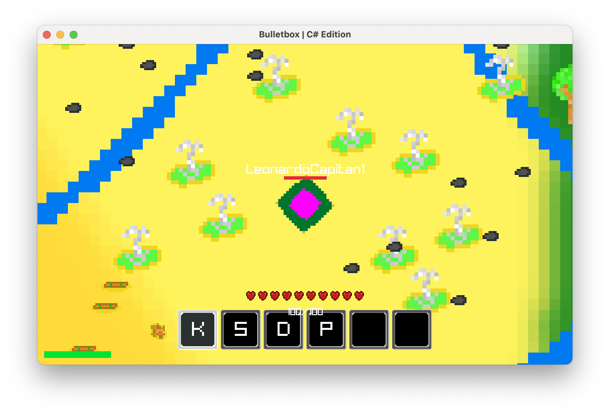
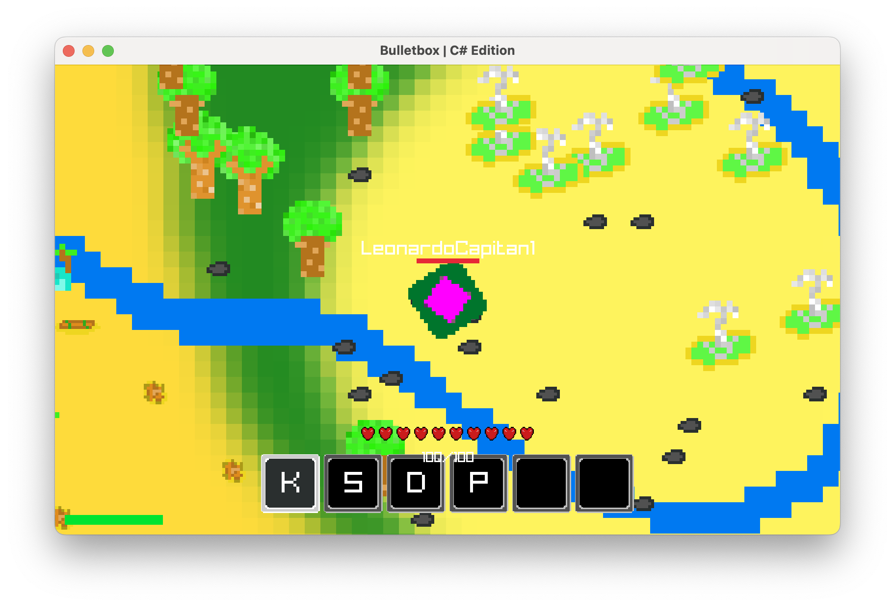
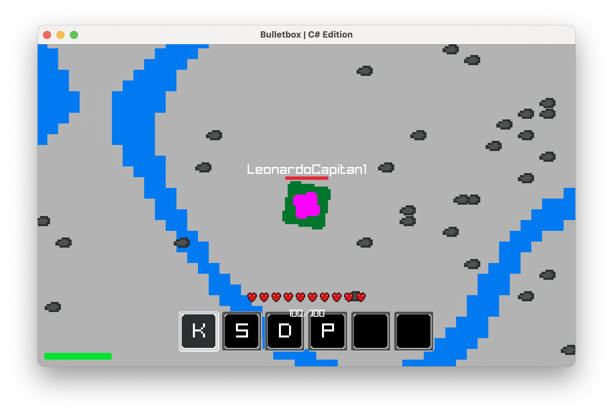
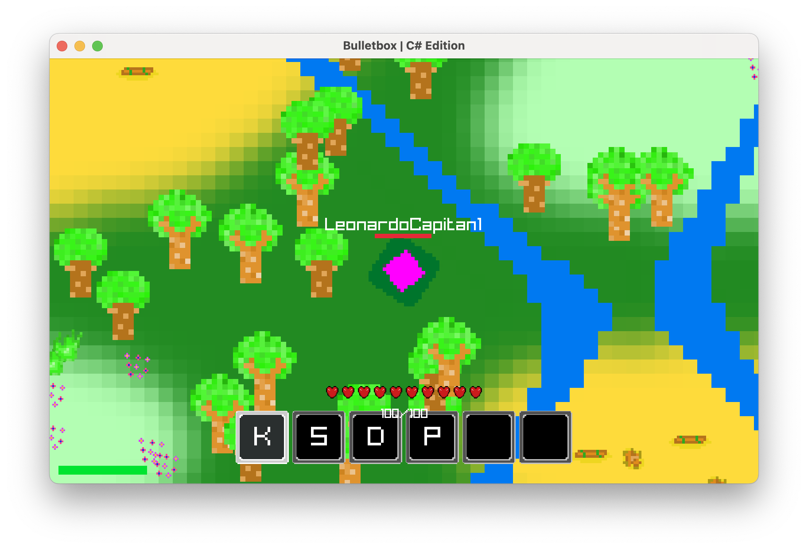

The Features & Environment Update
< Back to Patch Notes
Bulletbox 26.1.1-01i
Alpha Unreleased
Authoritative World Features
- Server-Side Feature Generation: World features (trees, logs, environmental objects) are now generated on the server. This ensures all players see identical object placement across the world. (26.1.1-01i.1/1)
-
Tree Variations:
Integrated
small_treeandlarge_treeassets into the chunk generation pipeline. Large trees spawn at a 1-in-3 ratio relative to small trees. (26.1.1-01i.1/2) - Global Density Rebalance: Overall feature spawn rates reduced to ~2% to prevent visual clutter and excessive overlap in chunk grids. (26.1.1-01i.1/3)
-
Biome Feature Integration:
Added biome-specific environmental features across all major world regions:
- Desert:
tumbleweed,desert_log,palm_tree - Meadow:
meadow_hedge,meadow_flowers - Forest:
small_tree,large_tree,stone - Beach:
palm_tree,beach_umbrella - Ocean: rare
sailboat - Stony Peaks:
stone - Brimstone Springs:
sulfur_spring,stone
- Desert:
Rendering Pipeline
- Optimized Feature Pass: Client now renders features directly from cached server data, removing redundant local feature computation during draw cycles. (26.1.1-01i.2/1)
- Adaptive Feature Scaling: Small features (flowers, rocks, etc.) are automatically scaled to fit the world grid and prevent visual distortion. (26.1.1-01i.2/2)
-
Texture Asset Integration:
Feature rendering now uses assets from
resources/textures/feature/through the centralizedAssetManager. (26.1.1-01i.2/3)
Technical Refinements
- Deterministic Spatial Hashing: Feature placement uses coordinate-based hashing to guarantee identical generation across all clients without additional synchronization overhead. (26.1.1-01i.3/1)
Notes
- Future expansions planned: Desert cacti, Stony Peaks boulders, biome-specific structures. (26.1.1-01i.4/1)
- Feature interaction systems (e.g. chopping trees, environmental destruction) are currently in development. (26.1.1-01i.4/2)
Development Preview: Environmental Features
FOREST FEATURES

DESERT FEATURES





